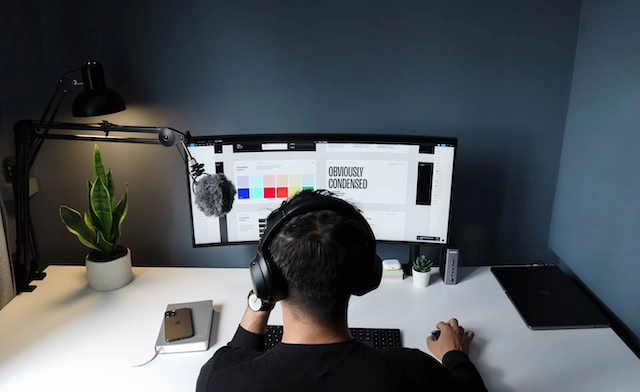
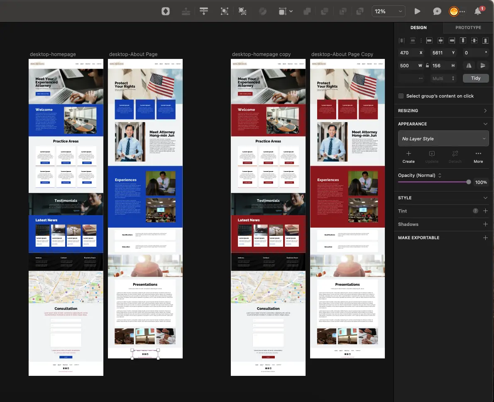
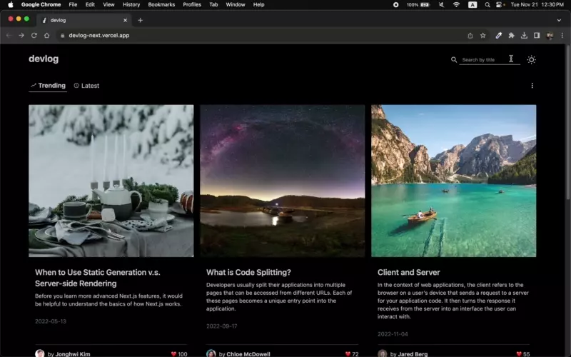

웹사이트 제작에는 크게 두 가지 방법이 있습니다. 첫째는 템플릿이라고
하는 미리 만들어진 기능과 디자인 틀을 토대로 만드는 방법입니다.
둘째는 템플릿 없이 직접 웹사이트의 모든 것을 개발하는 방법입니다.
이번 칼럼에서는
맞춤 웹사이트 제작이 갖고 있는 차별점을 소개해드립니다.


이 글을 읽으시면 대다수의
템플릿 기반 웹사이트의 한계를 이해하실 수 있습니다. 맞춤 제작 웹사이트가 어떻게 이런 한계를
넘어설 수 있는지 알게 되실 겁니다. 맞춤 웹사이트 제작이 필요한
3가지 이유에 대해 알아보겠습니다.
첫째, 독특한 브랜딩이 가능하기 때문입니다.
브랜드란 기업의 제품 및 서비스에 대한 고유한 인상입니다.
브랜딩이란 이 브랜드를 만드는 전반적인 과정을 의미합니다. 브랜딩의
목표는 소비자에게 해당 기업에 대한 독특한 인식을 심어주는
것입니다.
웹사이트의 주요 목적은 브랜딩을 극대화하는 것입니다. 레이아웃,
로고, 색상, 타이포그래피, 이미지 등 웹사이트의 모든 요소들이
기업의 고유한 브랜드를 나타내야 합니다.
템플릿은 이런 디자인적인 부분들이 미리 만들어진 형태로
제공됩니다. 템플릿에 따라 조정이 가능한 요소들의 범위가 달라질 수
있으나 제약이 있는 경우가 대부분입니다. 따라서 기업의 브랜드에 딱
맞는 디자인을 구현하는 것이 어렵습니다.
반면 맞춤 웹사이트는 디자인에 관해 100% 통제가 가능합니다.
웹사이트의 모든 시각적인 요소들을 원하는대로 자유롭게 조정할 수
있습니다. 브랜드의 독특함을 디자인으로 표현할 수 있습니다.

위 이미지는 웹타민 고객 홈페이지 디자인의 초안입니다. 웹타민은
차별화된 브랜딩을 위해 디자인을 손수 제작합니다. 숙련된 디자이너의
손에서 심미성, 사용성, 브랜드 이미지를 모두 고려한 최적의 디자인이
탄생합니다. 따라서 획일화된 템플릿 웹사이트에 비해
방문자들에게 브랜드를 각인시키는 것이 훨씬 유리 합니다.
둘째, 기능 구현에 제약이 없기 때문입니다.
템플릿 웹사이트는 기능적인 제한이 따르게 됩니다.
미리 만들어진 기능의 범위 안에서만 웹사이트를 구축할 수 있습니다. 결제 시스템 통합, 외부 비즈니스 도구 연동, 검색
및 필터 기능, 사용자에게 맞춤 컨텐츠를 제공하는 기능 개발에 제약이
있는 경우가 많습니다.
여기 템플릿으로 구축한 로펌 웹사이트가 있습니다. 웹사이트 내부에
블로그를 운영중이며 상속법, 이민법, 이혼법 등의 다양한 범주의 글이
100개가 있습니다. 방문자 김철수씨는 미국 이민법에 대해 궁금합니다.
100개의 글들 중에 이민법에 관련된 포스팅만을 읽고자 합니다. 하지만
블로그 페이지에는 필터링을 할 수 있는 부분이 보이지 않습니다. 직접
페이지를 이동하며 수동으로 검색을 하는 방법밖에 없습니다.
김철수씨는 불편함을 느껴 다른 로펌 웹사이트를 둘러보고자 합니다.
이후 맞춤 제작으로 개발된 로펌 웹사이트 한곳을 찾았습니다. 이
웹사이트 또한 내부에 전문 블로그가 존재합니다. 페이지에는 상속법,
이민법, 이혼법이 각각 탭으로 분리되어 있습니다. 정렬 기능이
존재하여 포스팅을 최신순, 인기도순으로 보는 것이 가능합니다.
검색도 가능하여 특정 키워드를 중심으로 포스팅을 조회해볼 수도
있습니다. 김철수씨는 이전의 웹사이트에 비해 보다 편리한 사용자
경험에 만족합니다.

위 이미지는 웹타민의 프로젝트 중 하나인 블로그 웹사이트입니다.
검색어를 입력할 때 실시간으로 블로그 글을 필터링하여 보여주는
모습입니다. 이처럼 맞춤 웹사이트는
방문자의 필요를 겨냥한 기능 구현이 가능합니다. 기능을 개발하는데 기술적인 제한이 없기 때문입니다.
방문자의 니즈를 충족시키는 웹사이트는 브랜드의 인상에 긍정적인
영향을 주게 됩니다. 브랜드에 대한 좋은 인식은 해당 제품 및
서비스에 대한 수요 창출의 시작점입니다.
셋째, 로딩 시간이 더 빠르기 때문입니다.
웹사이트를 방문했을 때 로딩 시간이 길어서 뒤로 가거나 창을 닫은
적이 있으실 겁니다. 로딩이 3초가 넘어가면 방문자들의 대부분은
사이트를 이탈하게 됩니다. 웹사이트를 이용할 때 발생하는 대기
시간은 사용자의 만족도에 큰 영향을 미칩니다. 따라서 웹사이트를
제작할 때 로딩 시간의 1 - 2초 차이는 아주 중요합니다.
템플릿 웹사이트는 일반적으로 로딩 시간이 더 느립니다. 정확히는
로딩 속도를 저하시킬 수 있는 요소들이 있고, 그것들을 통제하는
것이 거의 불가능합니다. 다음과 같은 요소들이 있습니다.
먼저 과도하게 큰 이미지 파일입니다. 여기 400 x 300 픽셀 사이즈의
블로그 썸네일 이미지가 필요합니다. 하지만 사용하고자 하는 원본
이미지는 사이즈가 4000 x 3000 픽셀입니다. 이런 경우에는 이미지를
썸네일 크기에 맞게 줄여 로딩 속도를 줄여야 합니다. 이것을 이미지
최적화라고 하는데 템플릿 웹사이트는 이것을 지원하지 않는 경우가
있습니다. 따라서 불필요하게 큰 용량의 이미지 파일로 인해 로딩
속도가 느려지게 됩니다.
다음으로는 자바스크립트와 CSS 파일입니다. 생소한 용어에 당황하실
필요 없습니다. 간단히 웹사이트의 외관 및 동작과 관련된 파일이라고
생각하시면 됩니다. 템플릿은 종종 불필요한 페이지에서조차 이
파일들을 로딩하게 됩니다. 그밖에도 템플릿 웹사이트는 비효율적인
코드, 최적화 되지 않은 서드파티 플러그인, 과도한 양의 외부
스크립트 파일 호출 등으로 로딩 속도가 비교적 느려지기 쉽습니다.
반면 맞춤 제작 웹사이트는 이미지 파일을 알맞은 사이즈로 최적화시킬
수 있습니다. 관련 파일들을 필요한 곳에서만 로딩할 수 있도록 설계할
수 있습니다. 효율이 높은 코드를 작성하여 로딩 시간을 줄일 수
있습니다.
로딩 속도와 관련된 모든 기술적인 부분들에 대한 완벽한
통제가 가능합니다.
위 이미지는 웹타민의 공식 홈페이지에 대한 속도 검사 결과입니다.
속도 최적화를 적용한 결과 빠른 로딩 속도 점수를 보여주고 있습니다.
이 로딩 속도는 사용자의 만족도에 직결되는 요소입니다. 로딩이 빠른
웹사이트는 방문자의 만족도가 높아지게 됩니다.
만족도가 높은 사용자는 해당 브랜드에 대해 좋은 인상을 가질 수
밖에 없습니다.
지금까지 맞춤 웹사이트 제작이 필요한 3가지 이유를 알아보았습니다.
그 이유들은 다음과 같습니다.
- 독특한 브랜딩이 가능함
- 기능 구현에 제약이 없음
- 로딩 속도가 빠름
사용자들을 만족시키는 웹사이트를 제작하는 것은 온라인 브랜딩의
출발점입니다. 템플릿 웹사이트는 비교적 제작이 간편해 가격이 저렴하고
제작 기간이 짧다는 장점이 있습니다. 다만 템플릿의 태생적 한계로
인해 브랜드에 꼭 맞는 웹사이트를 제작하는 것에 제한이 따르게
됩니다.
반면 맞춤 웹사이트는 디자인과 기능 및 성능의 모든 것이 주문
제작됩니다. 비교적 가격이 높고 제작 기간이 길지만 브랜드의 고유한
정체성을 나타내는 것에 최적화되어 있습니다.
웹사이트 제작 의뢰시 각각의 장단을 비교하고 판단하여 현명한 결정을
내리시길 바랍니다. 웹사이트 제작 관련 궁금한 점이나 의뢰를
원하신다면 문의주세요.